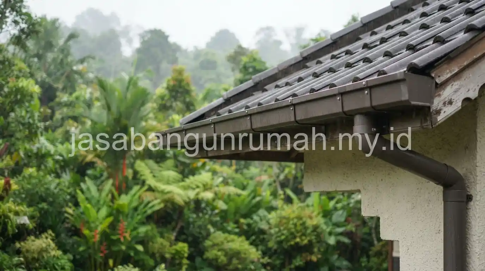

Daftar Isi
Jasa desain rumah minimalis Bogor menghadirkan solusi arsitektur khusus untuk mengatasi curah hujan tinggi dan kelembaban udara, melalui perencanaan kemiringan atap curam, talang air lebar, dan tritisan yang cukup panjang agar dinding tetap terlindungi.
Mengapa Desain Rumah di Bogor Membutuhkan Pertimbangan Khusus terhadap Curah Hujan?
Bogor termasuk wilayah dengan intensitas hujan yang jauh lebih tinggi dibandingkan sebagian besar kota lain di Jawa Barat, sehingga desain rumah konvensional yang dirancang untuk daerah beriklim kering berisiko mengalami kebocoran, rembesan dinding, dan pelapukan material lebih cepat apabila diterapkan tanpa penyesuaian.
Curah hujan yang tinggi disertai kelembaban udara yang cenderung lebih besar dibandingkan dataran rendah juga memengaruhi ketahanan material bangunan dalam jangka panjang, terutama pada bagian atap, talang, dan dinding luar yang paling sering terpapar air secara langsung. Rumah yang tidak dirancang dengan pertimbangan ini cenderung lebih rentan mengalami masalah seperti jamur pada dinding, cat yang cepat pudar, atau genangan air di sekitar area rumah saat hujan deras berlangsung dalam waktu lama.
Selain aspek teknis pada bangunan, kondisi tanah di sebagian kawasan Bogor yang berkontur dan berdekatan dengan area resapan air pegunungan juga perlu diperhatikan sejak tahap perencanaan pondasi, karena pergerakan tanah akibat air hujan yang meresap dapat berdampak pada kestabilan struktur apabila tidak diperhitungkan dengan tepat oleh tenaga ahli sejak awal.
Berapa Kemiringan Atap dan Lebar Talang yang Disarankan untuk Kondisi Bogor?
Kemiringan atap yang disarankan untuk wilayah dengan curah hujan tinggi seperti Bogor umumnya berada di atas tiga puluh lima derajat, jauh lebih curam dibandingkan kemiringan atap standar pada rumah di daerah dengan intensitas hujan lebih rendah.
| Elemen Arsitektur | Spesifikasi yang Disarankan | Fungsi Utama |
|---|---|---|
| Kemiringan Atap | Lebih dari 35 derajat | Mempercepat aliran air hujan turun sehingga tidak sempat merembes ke dalam struktur atap |
| Talang Air | Lebar dan berkapasitas tinggi | Menampung debit air hujan besar tanpa meluap ke dinding atau area teras |
| Tritisan Atap (Overstek) | Minimal satu meter | Melindungi dinding luar dari cipratan air hujan langsung saat angin kencang |
Kemiringan atap yang curam bekerja dengan prinsip mempercepat laju air hujan menuju talang, sehingga air tidak sempat menggenang atau meresap melalui sela-sela penutup atap seperti yang berisiko terjadi pada atap dengan kemiringan landai atau atap datar cor beton. Talang air yang lebar juga menjadi elemen penting karena volume air hujan di Bogor pada saat curah hujan tinggi bisa jauh lebih besar dibandingkan talang standar yang dirancang untuk kondisi hujan normal, sehingga talang berkapasitas kecil berisiko meluap dan menyebabkan air jatuh langsung membasahi dinding di bawahnya.
Tritisan atau overstek atap yang direncanakan minimal satu meter berfungsi sebagai pelindung tambahan bagi dinding luar rumah, terutama saat hujan disertai angin yang membuat air jatuh tidak sepenuhnya vertikal melainkan miring ke arah dinding. Tanpa tritisan yang cukup panjang, dinding bagian atas berisiko terus-menerus terkena cipratan air dalam jangka panjang, yang pada akhirnya dapat mempercepat munculnya lumut, jamur, atau pengelupasan cat pada permukaan dinding tersebut.
Apa Saja Solusi Arsitektur Lain agar Rumah Tetap Asri dan Tidak Lembap?
Selain penyesuaian pada atap dan talang, solusi arsitektur lain yang umum diterapkan meliputi peninggian level lantai dasar dari permukaan tanah sekitar, penggunaan material dinding yang lebih tahan terhadap kelembapan, serta perencanaan ventilasi silang yang memadai untuk menjaga sirkulasi udara tetap lancar meski kelembaban di luar rumah cukup tinggi.
Peninggian lantai dasar membantu mengurangi risiko rembesan air tanah yang naik melalui kapilaritas material dinding, sekaligus memberi jarak aman apabila terjadi genangan air ringan di sekitar halaman rumah saat hujan sangat deras. Material dinding yang dilapisi cat waterproofing pada bagian bawah, terutama pada area yang berbatasan langsung dengan tanah lembap, juga membantu memperpanjang usia pakai dinding dibandingkan dinding tanpa perlindungan tambahan.
Ventilasi silang yang direncanakan sejak tahap desain membantu menjaga udara di dalam rumah tetap bersirkulasi dengan baik, sehingga kelembaban dari luar tidak terperangkap di dalam ruangan dan memicu pertumbuhan jamur pada dinding atau plafon. Penempatan jendela pada dua sisi berlawanan dalam satu ruangan, misalnya, memungkinkan udara mengalir secara alami tanpa harus terlalu mengandalkan pendingin ruangan atau exhaust fan tambahan.
Selain aspek fungsional terhadap cuaca, konsep asri tropis juga tetap dapat dihadirkan melalui elemen hijau seperti taman kecil di area tertentu atau bukaan yang mengarah ke halaman, sehingga rumah tetap terasa sejuk dan menyatu dengan lingkungan pegunungan khas Bogor tanpa mengorbankan aspek ketahanan terhadap hujan. Perpaduan antara elemen kayu pada teras dengan tanaman rambat di pagar, misalnya, dapat memberi kesan alami sekaligus tetap mempertahankan fungsi perlindungan dari cipratan air hujan pada bagian struktur utama rumah.

Perencanaan seluruh elemen ini sebaiknya dilakukan secara terpadu sejak tahap awal desain, bukan ditambahkan secara terpisah setelah gambar kerja selesai, karena penyesuaian kemiringan atap, posisi talang, dan tata letak ventilasi saling memengaruhi satu sama lain dalam satu kesatuan desain arsitektur. Kesalahan menghitung salah satu elemen, misalnya kemiringan atap yang terlalu landai meski sudah menggunakan talang lebar, tetap dapat menyebabkan masalah kebocoran di kemudian hari apabila tidak diperhitungkan secara menyeluruh oleh arsitek yang memahami karakteristik iklim setempat.
Bagi pemilik lahan di Bogor yang ingin mewujudkan rumah minimalis dengan desain tahan cuaca ekstrem sekaligus tetap asri bergaya tropis, dapat hubungi jasa desain rumah minimalis bogor profesional untuk menjadwalkan konsultasi desain secara gratis dan mendapatkan gambaran solusi arsitektur yang sesuai dengan kondisi lahan serta curah hujan di lokasi rumah Anda.